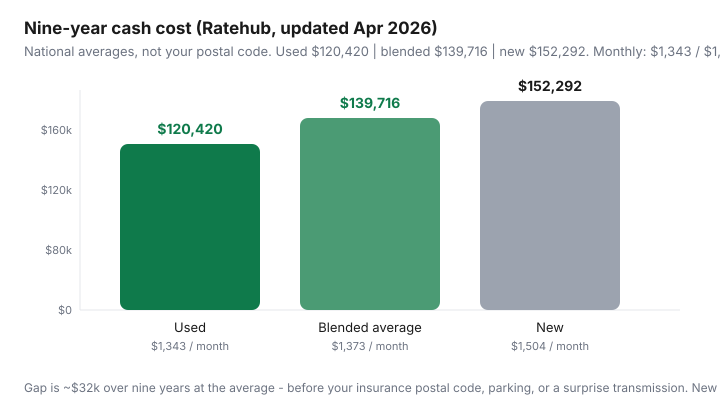

Transportation · Canada
Used vs new car in Canada: total cost of ownership math for households
Households compare the monthly payment on a new compact to the asking price on a five-year-old one and call it research. They skip insurance rating, interest, the first-year depreciation cliff, and the week the used car needs a transmission. Ratehub’s 2026 Canadian averages still show used cheaper as a class — $1,343 vs $1,504 per month, about $32,000 over nine years — but averages are not a VIN. This is a TCO worksheet with Canadian insurance and incentive context, not a U.S. lease-hack thread.
Build the monthly stack with the ownership framework. If the car would sit, price car-share first. If you buy privately, use the UVIP / CARFAX Canada / PPI checklist — a cheap ad is not a cheap car.
Disclosure: Auto-loan rate comparison tools and insurance quote tools are offer types. Saving Optimizer may earn a commission if we later add partner links. We do not currently claim lender or insurer partnerships. Paying interest to chase a slightly newer bumper is not a save. This is not insurance or credit advice.
Key takeaways
- Ratehub (updated 29 Apr 2026): nine-year cash cost used $120,420 · blended $139,716 · new $152,292. Monthly $1,343 / $1,373 / $1,504.
- Loan interest is a used-vs-new variable: a cheaper purchase can still be a longer, uglier loan if you stretch amortization.
- Insurance wants the VIN. New is not automatically worse, used is not automatically cheaper — quote both.
- Warranty and CPO move repair risk. They do not erase a bad inspection. Budget a PPI on private sales (Ontario UVIP, CARFAX Canada as records — not a mechanic).
- EVAP (up to $5,000 in 2026) applies to new eligible EVs only. Put it on the new side of the worksheet, then see if used gas still wins.
Purchase price, interest, and depreciation curves
New cars take the steepest depreciation in year one; that loss is real even if you do not sell. Used cars have already taken it for you. You pay less capital and usually less interest in dollars — unless you finance a used car at a worse rate for longer because the payment “looked the same.”
Ratehub’s monthly split for the blended average: principal $522 + interest $192. New vs used monthly totals ($1,504 vs $1,343) imply the extra new-car cost is not only the sticker — it is interest and often insurance. Worked example (labelled, not a quote):
- New compact $32,000, 5.9% for 72 months, 10% down — payment plus interest is the bulk of Ratehub’s “new” line.
- Used compact $16,000 cash — principal and interest drop off the dashboard; you still have insurance, parking, fuel, maintenance.
- Used compact $16,000 at 8.9% for 84 months because the dealer buried a long loan — you can erase much of the used advantage in interest. Compare total interest + price, not the monthly debit.

Insurance rating differences new vs used
Insurers price theft, repair cost, and replacement. A new crossover with a high theft rating can cost more to insure than a boring used Civic. A ten-year-old car might be collision-optional (FSRA notes collision may not pay on a very low-value car). Do not copy a forum premium.
Process: same drivers, same deductibles, same kilometres, two VINs, two quotes — see broker vs direct shopping. If new insures at $220/month and used at $140, that $80 × 12 = $960/year is part of TCO, not a footnote.
Maintenance and surprise repairs on older vehicles
Ratehub’s 2026 maintenance line jumped to $120/month on the blended average (from $79 in 2025 in their table) — inflation and parts, not your uncle’s opinion. Used cars sit on the wrong side of timing belts, batteries, and rust in salted provinces. New cars sit on factory maintenance schedules and fewer “while we were in there” invoices.
Sinking fund sketch (labelled): for a 8–12 year vehicle, parking $80–$150/month in a repair envelope is how you avoid putting a $4,000 axle on a card at 20%. If you cannot fund that envelope, you are not “saving vs new”; you are running uninsured mechanical risk.
Warranty and CPO as risk transfer
New: full factory warranty is included in the price. CPO: a used car that passed a checklist plus extra warranty — you pay for it in the asking price. Private sale: cheapest purchase, maximum inspection burden.
- Ontario private sales: UVIP (Used Vehicle Information Package) is a starting record, not a clean bill of health.
- CARFAX Canada / equivalent: accident and registration clues, not a lift inspection.
- PPI: independent mechanic you hire, on a hoist, before money moves.
CPO is worth it when the warranty present value exceeds the CPO premium over a similar private car after PPI. It is not worth it when the CPO price is basically new-car money on a two-year-old model with 40,000 km.
Fuel and possible EV incentives if considering new EV
Ratehub’s base gas line is $165/month (they also flagged ~$231 in mid-April 2026 if you used then-current national pump prices during the temporary federal excise pause). Electricity for a commute EV is a different utility line — still not zero, especially if you only have public charging.
EVAP can take up to $5,000 off a new eligible BEV in 2026 (transaction value rules apply). Used EVs do not get EVAP — some provinces still help; see the stack map. Worked comparison (labelled): new eligible BEV at $48,000 − $5,000 = $43,000 financed, plus home charger, versus a $18,000 used gas compact. The EV can still win on fuel if you drive a lot and park where power is cheap; it loses if you drive 6,000 km/year in a city with a fare cap. Do the kilometres honestly in EV vs gas commuting TCO.
Worked examples: compact used vs new compact
| Ratehub “new” | Ratehub “used” | Paid-off used compact (sketch) | |
|---|---|---|---|
| Monthly cash (their model) | $1,504 | $1,343 | n/a — drop loan lines |
| Nine-year | $152,292 | $120,420 | Depends how long you keep it |
| Loan | Yes | Often yes in the average | $0 principal/interest |
| Repair risk | Warranty years | Higher | Highest — fund a reserve |
| EVAP | Possible if eligible new EV | No | No |
Paid-off sketch using Ratehub’s non-loan lines: gas $165 + maintenance $120 + admin $10 + parking $200 + insurance $164 = $659/month before you replace their parking and insurance with yours. That number is the one a new-car payment has to justify with reliability or EV fuel savings.
When new still wins (reliability need, long hold, incentives)
- No second car, winter highway commute, or self-employment where a week in the shop is lost income.
- You will keep the vehicle 8–10 years so year-one depreciation is amortized into boredom.
- EVAP + provincial stack (where it still exists) + cheap home charging on high annual km.
- Used asking prices within a few thousand of a discounted new demo — you are not being paid enough to take the unknown repair.
- Accessibility or safety kit that is hard to retrofit.
New does not win because the showroom smells like a new car. If the kilometres are low, do not buy either. If you buy used, pay for a PPI. If you buy new, do not finance extras that blow an EVAP cap. Either way, quote insurance on the actual VIN before you fall in love.
Sources & date stamps
- Ratehub, “What is the total cost of owning a car?”, updated 29 Apr 2026 — new/used/average monthly and nine-year cash costs; component table.
- Transport Canada EVAP — new eligible vehicles only; 2026 amounts (see EVAP guide).
- FSRA collision-on-low-value-vehicle note — coverage design for older cars.
- Ontario UVIP and CARFAX Canada — records, not a substitute for a mechanical inspection.
Frequently asked questions
Is a used car always cheaper in Canada?
On Ratehub’s April 2026 averages, used is about $1,343/month versus $1,504 new, or roughly $32,000 less over nine years ($120,420 vs $152,292). Your insurance, repairs, and parking can erase that. A new EV with EVAP can close the gap on the right commute.
Does new-car insurance cost more?
Often, because replacement cost and theft ratings are higher. It is not automatic. Quote both vehicles with the same drivers and deductibles before you assume the used car ‘saves’ $50 a month.
What does CPO actually transfer?
Certified pre-owned is a factory-backed (or dealer-backed) warranty plus an inspection — risk transfer you pay for in the price. It is not a CARFAX substitute and not a PPI by an independent mechanic you chose.
Can I get EVAP on a used EV?
No. EVAP is for new eligible vehicles. Some provinces (Québec’s Roulez vert has had used amounts) may still help; federal will not.
When does new still win?
When downtime is expensive (no second car, rural winter, tools), when EVAP plus a long hold beat depreciation, or when the used market price is so close to new that you are buying someone else’s first-year loss without the warranty.